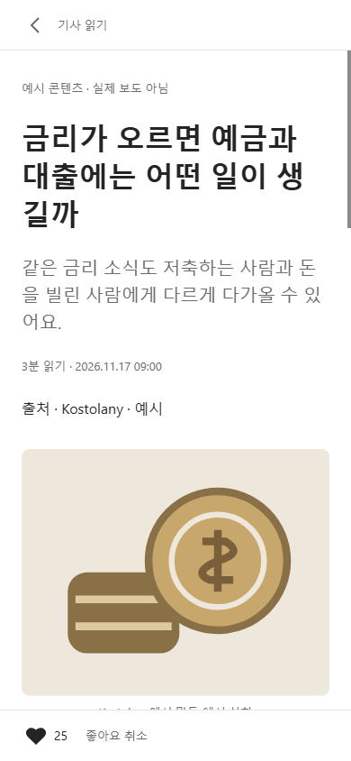
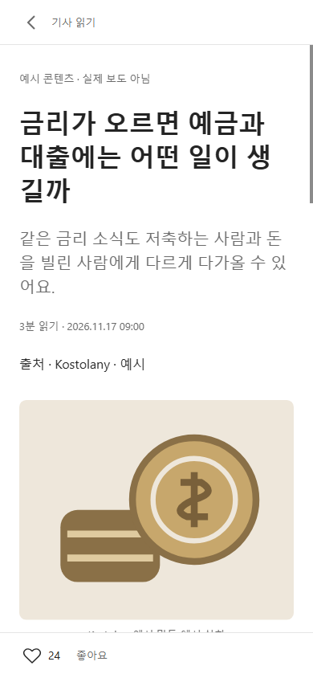
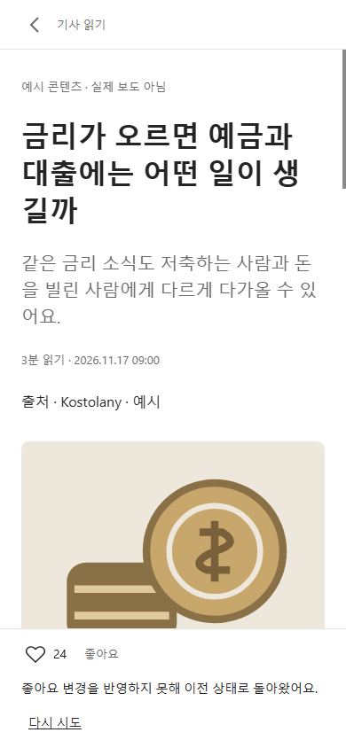
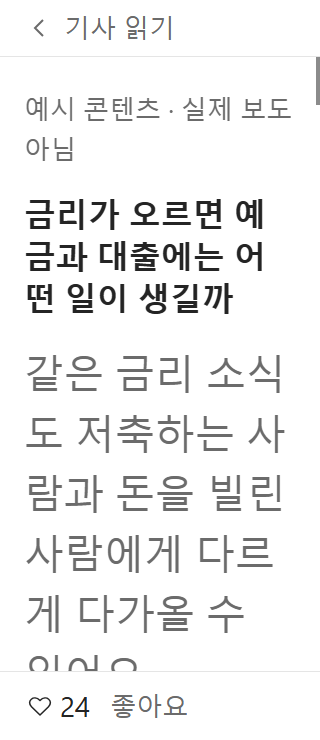

sc_332d5b0923e546fcbf6a8fc613cda6a4

sc_e3b85b46c655483eb954e6f953d0b7f6

하단 왼쪽 반응 · 채운 하트 · 수치 25

2026-11-18 KST · Medium iOS Latest 카탈로그 1419의 보관 원본과 Chrome 실제 캡처를 비교했다. 원본 1179×2556 px는 가로 390px로 비율 유지 축소하며 파일을 수정하지 않았다. 우리 화면은 390×844 브라우저이며 OS 상태 표시줄·홈 인디케이터가 없어 수직 위치는 같지 않다.

원본의 흰 바탕·상단 구분선·왼쪽 아이콘과 수치·채움 선택 피드백을 참고했다. 우리 기본안은 하트 24px, 수치 14/22px, 아이콘과 수치 간격 8px, 좌우 24px, 최소 터치 48×48, 기본 바 높이 약 56px다. 박수와 +16 배지 대신 1인 1좋아요 및 처리 중 문구를 사용한다. 댓글·저장·공유·듣기·Follow는 구현 범위 밖이다.



본문의 한글·삽화·사실 요약·AI 해석은 자체 콘텐츠다. 원본 전체 화면과 픽셀 일치를 주장하지 않는다. 실제 iOS·Android 기기, Safe Area, VoiceOver·TalkBack, OS 글자 확대는 미검증이다.